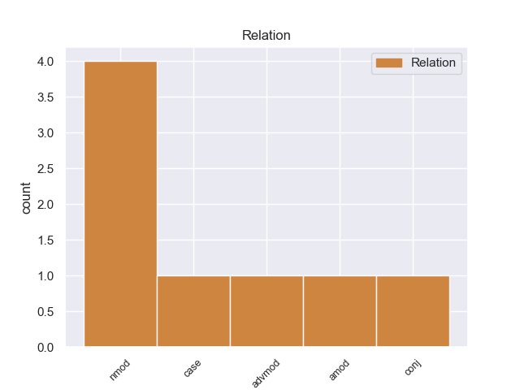
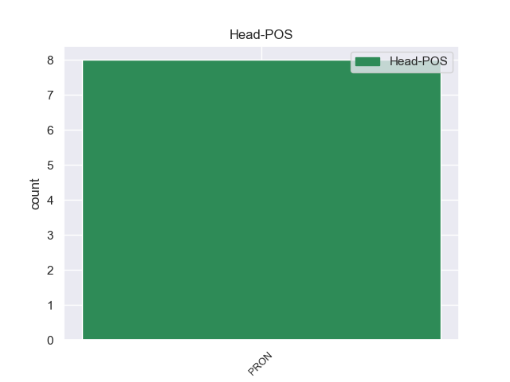
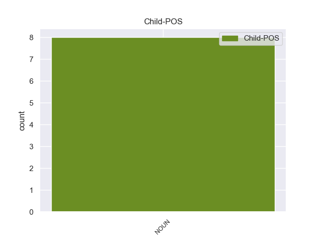

Distribution of features within this leaf



Agreement Rules sorted by frequency.
- When the dependent token is the nominal modifier(nmod) of the head token, and the head token is PRON and the dependent token is NOUN.
1 A _ _ _ _ 0 _ _ _
2 sus _ _ _ _ 0 _ _ _
3 37 _ _ _ _ 0 _ _ _
4 años _ _ _ _ 0 _ _ _
5 con _ _ _ _ 0 _ _ _
6 esta _ _ _ _ 0 _ _ _
7 victoria _ _ _ _ 0 _ _ _
8 pasó pasó PRON _ Number=Sing 0 _ _ _
9 a _ _ _ _ 0 _ _ _
10 encabezar _ _ _ _ 0 _ _ _
11 el _ _ _ _ 0 _ _ _
12 palmarés _ _ _ _ 0 _ _ _
13 de _ _ _ _ 0 _ _ _
14 la _ _ _ _ 0 _ _ _
15 prueba prueba NOUN _ Gender=Masc|Number=Sing 8 nmod _ _
16 ( _ _ _ _ 0 _ _ _
17 con _ _ _ _ 0 _ _ _
18 tres _ _ _ _ 0 _ _ _
19 victorias _ _ _ _ 0 _ _ _
20 ) _ _ _ _ 0 _ _ _
21 junto _ _ _ _ 0 _ _ _
22 con _ _ _ _ 0 _ _ _
23 su _ _ _ _ 0 _ _ _
24 compatriota _ _ _ _ 0 _ _ _
25 Moreno _ _ _ _ 0 _ _ _
26 Argentin _ _ _ _ 0 _ _ _
27 y _ _ _ _ 0 _ _ _
28 con _ _ _ _ 0 _ _ _
29 los _ _ _ _ 0 _ _ _
30 belgas _ _ _ _ 0 _ _ _
31 Marcel _ _ _ _ 0 _ _ _
32 Kint _ _ _ _ 0 _ _ _
33 y _ _ _ _ 0 _ _ _
34 Eddy _ _ _ _ 0 _ _ _
35 Merckx _ _ _ _ 0 _ _ _
36 . _ _ _ _ 0 _ _ _
1 Las _ _ _ _ 0 _ _ _
2 lenguas lenguas PRON _ Gender=Masc|Number=Sing 0 _ _ _
3 habladas habladas NOUN _ Gender=Masc|Number=Sing 2 case _ _
4 hoy _ _ _ _ 0 _ _ _
5 en _ _ _ _ 0 _ _ _
6 día _ _ _ _ 0 _ _ _
7 en _ _ _ _ 0 _ _ _
8 Escandinavia _ _ _ _ 0 _ _ _
9 se _ _ _ _ 0 _ _ _
10 desarrollaron _ _ _ _ 0 _ _ _
11 a _ _ _ _ 0 _ _ _
12 partir _ _ _ _ 0 _ _ _
13 de _ _ _ _ 0 _ _ _
14 el _ _ _ _ 0 _ _ _
15 nórdico _ _ _ _ 0 _ _ _
16 antiguo _ _ _ _ 0 _ _ _
17 , _ _ _ _ 0 _ _ _
18 cuya _ _ _ _ 0 _ _ _
19 extensión _ _ _ _ 0 _ _ _
20 no _ _ _ _ 0 _ _ _
21 difería _ _ _ _ 0 _ _ _
22 mucho _ _ _ _ 0 _ _ _
23 de _ _ _ _ 0 _ _ _
24 las _ _ _ _ 0 _ _ _
25 áreas _ _ _ _ 0 _ _ _
26 donde _ _ _ _ 0 _ _ _
27 hoy _ _ _ _ 0 _ _ _
28 se _ _ _ _ 0 _ _ _
29 habla _ _ _ _ 0 _ _ _
30 danés _ _ _ _ 0 _ _ _
31 , _ _ _ _ 0 _ _ _
32 noruego _ _ _ _ 0 _ _ _
33 y _ _ _ _ 0 _ _ _
34 sueco _ _ _ _ 0 _ _ _
35 . _ _ _ _ 0 _ _ _
1 No _ _ _ _ 0 _ _ _
2 tener _ _ _ _ 0 _ _ _
3 oficina _ _ _ _ 0 _ _ _
4 en _ _ _ _ 0 _ _ _
5 el _ _ _ _ 0 _ _ _
6 propio _ _ _ _ 0 _ _ _
7 aeropuerto _ _ _ _ 0 _ _ _
8 es _ _ _ _ 0 _ _ _
9 un _ _ _ _ 0 _ _ _
10 inconveniente inconveniente NOUN _ Gender=Masc|Number=Sing 15 advmod _ _
11 , _ _ _ _ 0 _ _ _
12 sobre _ _ _ _ 0 _ _ _
13 todo _ _ _ _ 0 _ _ _
14 si _ _ _ _ 0 _ _ _
15 vienes vienes PRON _ Gender=Masc|Number=Sing 0 _ _ _
16 de _ _ _ _ 0 _ _ _
17 lejos _ _ _ _ 0 _ _ _
18 y _ _ _ _ 0 _ _ _
19 viajas _ _ _ _ 0 _ _ _
20 con _ _ _ _ 0 _ _ _
21 niños _ _ _ _ 0 _ _ _
22 , _ _ _ _ 0 _ _ _
23 que _ _ _ _ 0 _ _ _
24 lo _ _ _ _ 0 _ _ _
25 único _ _ _ _ 0 _ _ _
26 que _ _ _ _ 0 _ _ _
27 esperas _ _ _ _ 0 _ _ _
28 es _ _ _ _ 0 _ _ _
29 que _ _ _ _ 0 _ _ _
30 te _ _ _ _ 0 _ _ _
31 den _ _ _ _ 0 _ _ _
32 el _ _ _ _ 0 _ _ _
33 coche _ _ _ _ 0 _ _ _
34 rápidamente _ _ _ _ 0 _ _ _
35 e _ _ _ _ 0 _ _ _
36 ir _ _ _ _ 0 _ _ _
37 te _ _ _ _ 0 _ _ _
38 a _ _ _ _ 0 _ _ _
39 tu _ _ _ _ 0 _ _ _
40 destino _ _ _ _ 0 _ _ _
41 . _ _ _ _ 0 _ _ _
1 Cuatro _ _ _ _ 0 _ _ _
2 coches coches PRON _ Gender=Masc|Number=Sing 0 _ _ _
3 policiales _ _ _ _ 0 _ _ _
4 rodean _ _ _ _ 0 _ _ _
5 a _ _ _ _ 0 _ _ _
6 el _ _ _ _ 0 _ _ _
7 grupo grupo NOUN _ Gender=Masc|Number=Sing 2 amod _ _
8 . _ _ _ _ 0 _ _ _
1 Las _ _ _ _ 0 _ _ _
2 familias familias PRON _ Gender=Masc|Number=Sing 0 _ _ _
3 mejor _ _ _ _ 0 _ _ _
4 representadas _ _ _ _ 0 _ _ _
5 son _ _ _ _ 0 _ _ _
6 Emberizidae _ _ _ _ 0 _ _ _
7 ( _ _ _ _ 0 _ _ _
8 verdines _ _ _ _ 0 _ _ _
9 , _ _ _ _ 0 _ _ _
10 gorriones _ _ _ _ 0 _ _ _
11 , _ _ _ _ 0 _ _ _
12 tangaras _ _ _ _ 0 _ _ _
13 y _ _ _ _ 0 _ _ _
14 calandrias _ _ _ _ 0 _ _ _
15 ) _ _ _ _ 0 _ _ _
16 , _ _ _ _ 0 _ _ _
17 Tyrannidae _ _ _ _ 0 _ _ _
18 ( _ _ _ _ 0 _ _ _
19 papamoscas _ _ _ _ 0 _ _ _
20 y _ _ _ _ 0 _ _ _
21 mosqueros _ _ _ _ 0 _ _ _
22 ) _ _ _ _ 0 _ _ _
23 , _ _ _ _ 0 _ _ _
24 Accipitridae _ _ _ _ 0 _ _ _
25 ( _ _ _ _ 0 _ _ _
26 gavilanes _ _ _ _ 0 _ _ _
27 , _ _ _ _ 0 _ _ _
28 águilas _ _ _ _ 0 _ _ _
29 y _ _ _ _ 0 _ _ _
30 aguilillas _ _ _ _ 0 _ _ _
31 ) _ _ _ _ 0 _ _ _
32 , _ _ _ _ 0 _ _ _
33 Troglodytidae _ _ _ _ 0 _ _ _
34 ( _ _ _ _ 0 _ _ _
35 saltarines _ _ _ _ 0 _ _ _
36 ) _ _ _ _ 0 _ _ _
37 y _ _ _ _ 0 _ _ _
38 Columbidae _ _ _ _ 0 _ _ _
39 ( _ _ _ _ 0 _ _ _
40 palomas palomas NOUN _ Gender=Masc|Number=Sing 2 conj _ _
41 ) _ _ _ _ 0 _ _ _
42 . _ _ _ _ 0 _ _ _
No disagree examples found.